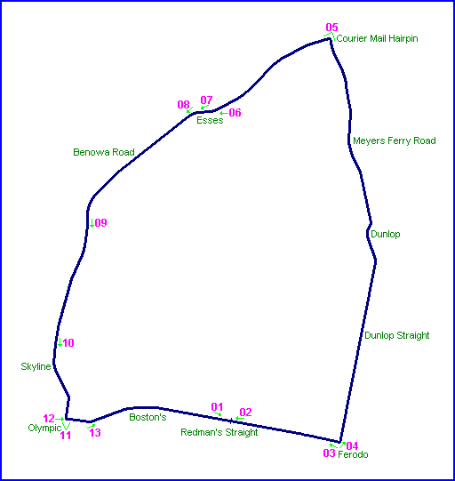
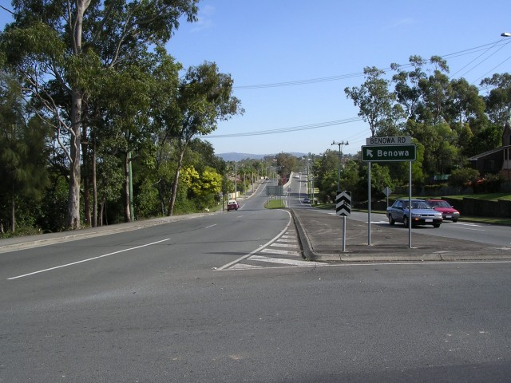
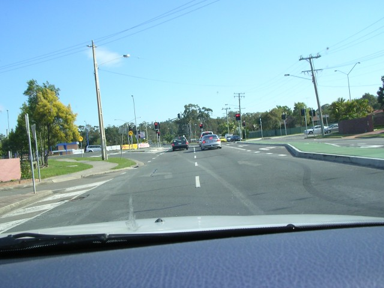
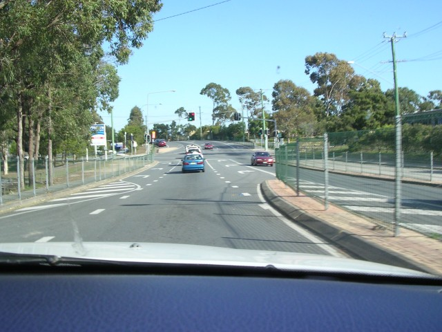
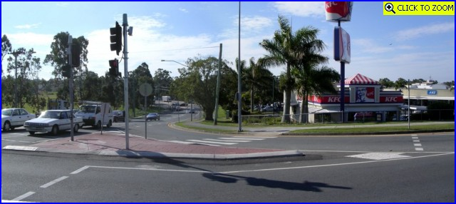
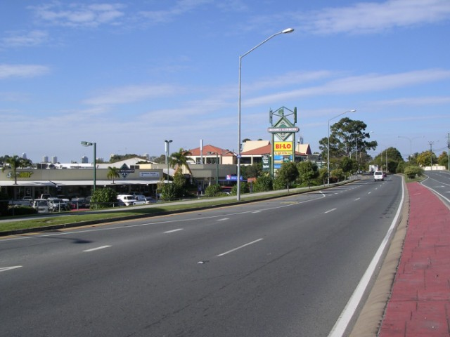
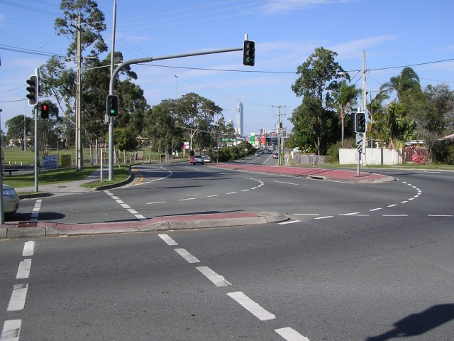

Southport - Benowa Road, Skyline, Olympic & Boston's
|| Contents || Redman's-Ferodo-Courier Mail-Esses | Benowa-Skyline-Olympic-Boston's || Home ||

Numbers and arrows on the map represent the location where the photographs were
taken. Scroll down to view the photographs.
Return to racingcircuits.net's Photo Archive Main Index

08 - Benowa Road from the roundabout at the exit of the Esses.

09 - Benowa Road, approaching the junction with Heeb Street.

10 - Approaching Skyline Bend.

11 - Olympic Corner. [Click
here to zoom in]

12 - Strart of Redman's Straight (Ashmore Road).

13 - Boston's Bend.
Photographs and Text ©Neil Fackerell. Reproduced here with kind permission.